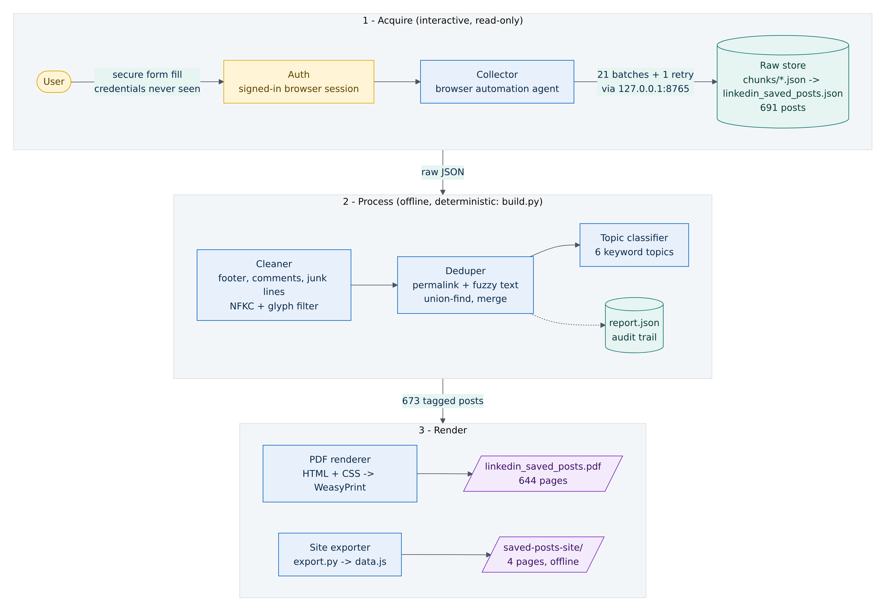
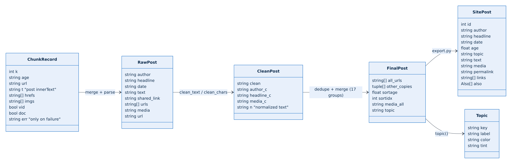
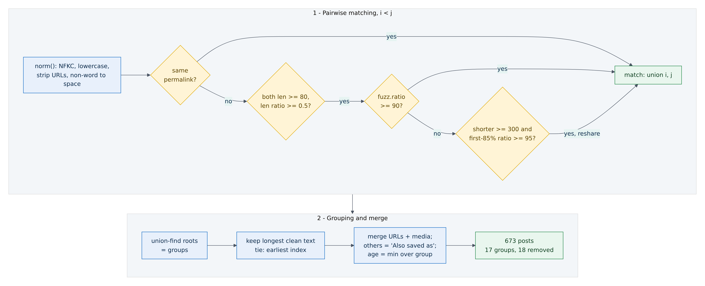
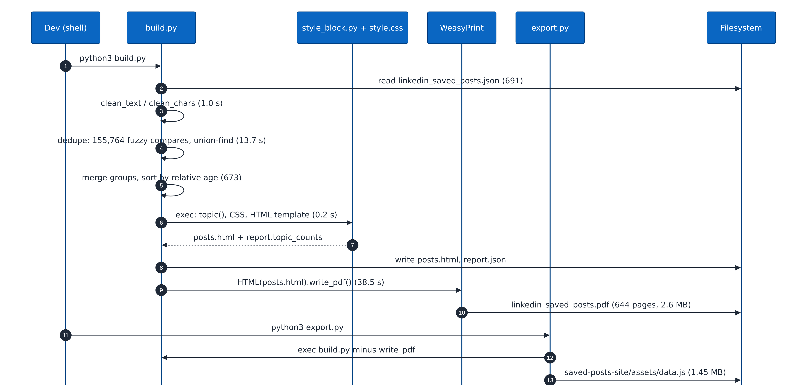
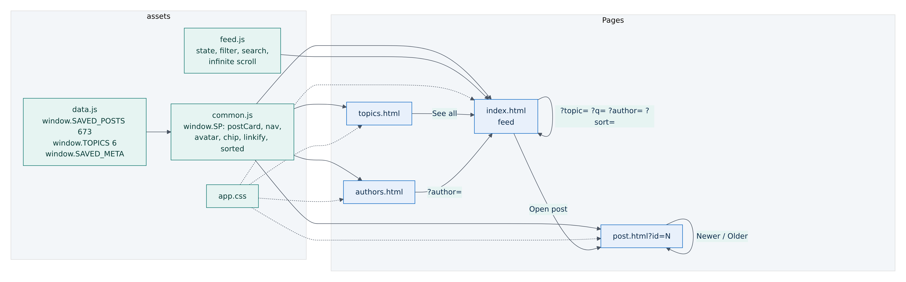
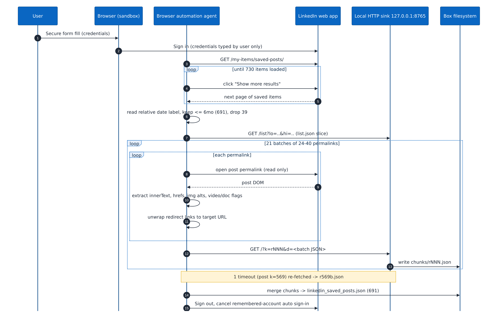
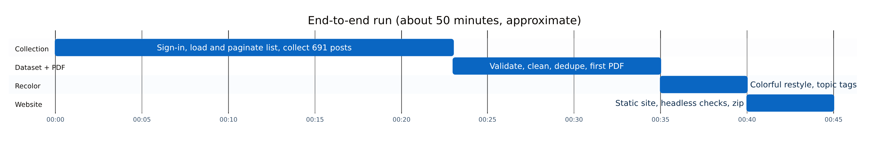
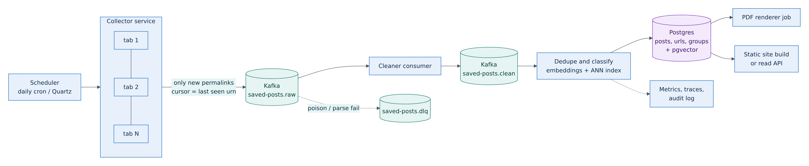

LinkedIn Saved Posts Pipeline — HLD + LLD
673 saved posts ko kaise nikala aur saaf kiya: sign-in → collect → raw store → clean → dedupe → topic classify → colorful PDF + offline website. Data model, dedupe algorithm, security, performance, Kafka/pgvector wala production version aur limitations — 8 diagrams ke saath. / A real batch-ETL design doc.
LinkedIn saved posts → cleaned dataset → colorful PDF + offline website
Version 1.0 · October 23, 2026 Scope: collection, cleaning, deduplication, topic classification, PDF and static-site rendering Runtime: 8 vCPU Intel Xeon · 15 GB RAM · Python 3.13 · WeasyPrint 70
posts collected · after dedupe · duplicates in 17 groups
unique URLs · PDF pages · authors on the site
topics · end to end
Topic colors used throughout: AI / LLM · Java / Spring · Kafka / Messaging · Cloud / K8s / DevOps · System Design · Other
1Overview, goals and requirements
1.1 Context
The user had several hundred LinkedIn posts saved over roughly six months, mostly about system design, Java/Spring, Kafka, cloud and AI. LinkedIn's "Saved posts" list is hard to search, can't be exported, and only shows posts newest first in a long scrolling list. This project turns that list into a clean, deduplicated, topic-tagged dataset with two outputs: a colorful, printable PDF (644 pages) and an
offline static website that looks like a social feed (4 pages, 673 posts, 381 authors).
It is a batch ETL pipeline with a human sign-in step: Auth → Collect → Raw store → Clean → Dedupe → Classify → Render (PDF, Site). Everything after collection is deterministic and runs offline from one JSON file.
| Stage | Input | Output | Real numbers |
|---|---|---|---|
| Collect | Saved-posts | list.json, chunks/r*.json, | 730 loaded, 39 dropped (> 6 mo), 691 |
| list (signed in) | linkedin_saved_posts.json | collected | |
| Clean | 691 raw posts | cleaned text per post | 155 footer strips, 29 comment strips, 472 |
zero-width + 1,414 unrenderable chars removed
Dedupe · 691 cleaned · 673 merged posts · 18 duplicates in 17 groups removed;
1,540 unique URLs kept
| Classify | 673 | topic per post | 6 topics: 178 / 138 / 30 / 27 / 234 / 66 |
|---|---|---|---|
| Render | 673 + topics | linkedin_saved_posts.pdf | 644 pages, 2.6 MB, 2,746 link annotations |
| Render | 673 + topics | saved-posts-site/ + zip | 4 pages, data.js 1.47 MB, 381 authors, |
|---|---|---|---|
| site | zip 1.57 MB |
1.2 Goals
- Completeness: capture every saved post from the last ~6 months with author, headline, relative date, full text, media note and all links.
- Quality: remove page chrome (footer, comment threads, counters), make text renderable (no tofu boxes), and merge reshared or double-saved posts.
- Two consumable outputs: a readable, printable PDF with a clickable index, and a fast offline site with search, filters and per-post pages.
- Auditability: every cleaning and dedupe decision is counted and written to report.json.
1.3 Non-goals
- No writes to LinkedIn: no likes, comments, unsaves or messages.
- No storage of credentials, cookies or session tokens in the artifacts.
- No exact timestamps. LinkedIn shows relative labels (5h, 3w, 4mo), and the pipeline keeps them as shown.
- No images or video files are downloaded. Media is recorded as a short note (e.g. document/carousel (possible), advertisement).
- No hosted backend. The site is files only.
1.4 Functional requirements
| ID | Requirement | How it is met |
|---|---|---|
| FR-1Collect saved posts from the last 6 | List paginated with "Show more results" to 730 items, filtered by | |
| months | relative label, 691 permalinks visited | |
| FR-2Extract author, headline, date, text, | DOM extraction per permalink; redirect links unwrapped; 8-field raw | |
| links, media | record | |
| FR-3Validate the dataset | Counts, empty texts (0), duplicate permalinks (0), url == urls[0] |
(691/691), near-empty posts (10)
| FR-4Remove duplicates, keep one copy, | Permalink + fuzzy text matching, union-find groups, longest copy |
|---|---|
| merge URLs | kept, URL union |
| FR-5PDF with title page, index, one section | HTML template + CSS paged media, target-counter() page |
| per post | numbers, clickable links |
| FR-6Topic tag with color and legend | Keyword classifier, 6 topics, colored card border, badge, label and |
legend
FR-7Feed-style website with search, filter, 4 static pages, URL-param state, infinite scroll, prev/next
sort, post pages
1.5 Non-functional requirements
| Quality | Requirement | Design response |
|---|---|---|
| Privacy | Credentials never seen or | User types credentials into a secure form; the agent only drives the |
| stored by the automation | signed-in page; signed out at the end and remembered-account auto |
sign-in cancelled
| Safety | Read-only against | Only page loads, scrolling, "Show more results" clicks and DOM reads; |
|---|---|---|
| no action buttons touched | ||
| Idempotent | Same input gives the | build.py is a pure function of linkedin_saved_posts.json; stable |
| rebuild | same output | sort keys (age, first index); rerun overwrites outputs |
| Offline site | Works from file://, no | Data embedded as assets/data.js (window.SAVED_POSTS), no |
| server | fetch(), no CDN | |
| Readability | High contrast in print | Body text #1a1a1a on white; color only in borders, badges, labels and |
tints
Performance Build in about a minute on Measured: clean 1.0 s, dedupe 13.7 s, HTML 0.2 s, WeasyPrint 38.5 s
one box
Portability Unicode-safe without DejaVu Sans only; glyph coverage checked against the font cmap
emoji fonts
2High-level design (HLD)
2.1 Architecture

Figure 1. Three phases: interactive acquisition, offline deterministic processing, two renderers fed by the same in-memory
model.
2.2 Data flow
- Auth. The user signs in through a secure form fill in the sandboxed browser. The automation sees only the resulting signed-in page.
- List harvest. The browser automation agent opens https://www.linkedin.com/my-items/saved-posts/ and clicks "Show more results" until 730 items are loaded. It reads each item's relative date label, keeps 691 that are 6 months old or newer, drops 39 older ones, and writes [label, permalink] pairs to /workspace/list.json.
- Detail harvest. Permalinks are processed in 21 batches of 24–40. For each permalink the agent opens the post page, reads the post container's text, links, image alt texts and video/document flags, and unwraps LinkedIn redirect links to their targets. Each batch is posted to a local HTTP sink on 127.0.0.1:8765 that writes /workspace/chunks/rNNN.json.
- Merge. Chunks are merged by index k into the 8-field raw record list linkedin_saved_posts.json (691 objects). The one failed record was superseded by its retry.
- Process.build.py cleans, dedupes, merges, sorts and classifies, then writes posts.html, report.json and the PDF.
- Export.export.py runs the same build.py code without the PDF step and serializes the final model into saved-posts-site/assets/data.js.
2.3 Components and responsibilities
| ComponentArtifact | Responsibility | Key decisions |
|---|---|---|
| Auth sandboxed browser | Hold a signed-in session the | Credentials entered only by |
| user created | the user; sign-out at the end | |
| Collector browser automation agent | Paginate, filter, visit | Read-only; batched; per-post 5 |
| permalinks, extract DOM | s DOM wait; failed item retried |
fields
| Local sink | /workspace/srv.py | GET /list?lo&hi serves listasyncio, bound to 127.0.0.1, |
|---|---|---|
| slices; GET /?k&d persists a 64 MB request limit |
chunk
| Raw store | list.json, chunks/, | Durable, replayable input for | JSON files; no DB needed for |
|---|---|---|---|
| linkedin_saved_posts.json | every later stage | 691 records | |
| Cleaner | build.py: clean_text, | Strip page chrome; | Line-based rules, counted in |
| clean_chars | normalize Unicode; drop | report.stats |
unrenderable glyphs
| Deduper | build.py: norm, union-find | Find exact and near | RapidFuzz ratio ≥ 90 plus |
|---|---|---|---|
| duplicates; merge groups | prefix rule ≥ 95 | ||
| Classifier | style_block.py: topic() | Assign one of 6 topics | Regex keyword scores; first |
line weighted 3x; System Design damped 0.8
| style.css, style_block.py, | Paged layout: cover, index, | CSS Paged Media, | |
|---|---|---|---|
| renderer | WeasyPrint | post cards | string-set, |
target-counter
| Site | export.py | Serialize final model to | Reuses build.py via exec, |
|---|---|---|---|
| exporter | data.js | so dataset logic lives in one |
place
| Static site | saved-posts-site/ | Feed, post, topics, authors | Vanilla JS, URL-param state, no |
|---|---|---|---|
| pages | build step |
2.4 Technology choices and rationale
| Choice | Why | Alternatives considered |
|---|---|---|
| Python 3.13 for | Fast to iterate on text heuristics; good Unicode, regex | Node (no RapidFuzz equivalent with |
| processing | and fuzzy-matching libraries | the same speed), Java (heavier for a |
one-off ETL)
| RapidFuzz | C++ Levenshtein-based ratio; 155,764 compares in | difflib (much slower), MinHash/LSH |
|---|---|---|
| fuzz.ratio | ~13.7 s on one core | (overkill at n = 691) |
| regex module | \p{Emoji_Presentation} and | Hand-maintained emoji ranges |
| \p{Extended_Pictographic} properties are not in | (incomplete) |
stdlib re
| fontTools | Reads DejaVu cmap so only glyphs the font has are | Trusting font fallback (pulled in a |
|---|---|---|
| kept, so the PDF never shows a missing-glyph box | color emoji font in v1) | |
| WeasyPrint 70 | CSS Paged Media: running headers, target-counter | ReportLab (manual layout), |
| (HTML + CSS to | for index page numbers, real link annotations, | headless Chrome print (weaker |
| PDF) | gradients | paged-media support) |
| DejaVu Sans | Wide Unicode coverage (arrows, check marks, Indic | Noto (variable fonts, partial |
| rupee sign, box drawing), embedded and subset in the | coverage), color emoji (inconsistent | |
| in print) | ||
| Vanilla HTML/CSS/ | No toolchain; opens from file://; ~25 KB of code; | React/Vite (build step, bundle), |
| JS | easy to audit | static-site generators |
| Embedded | Browsers block fetch() of local files on file://; a | JSON + local server (breaks "just |
| data.js | script tag works everywhere | open index.html") |
| Mermaid (this | Diagrams as code, rendered headlessly to PNG | Hand-drawn diagrams |
document)
3.1 Data model per stage

Figure 2. Record shapes from collection to the site payload. Field names are the real keys in the files and code.
3.1.1 Collection list (/workspace/list.json)
691 pairs [label, permalink], newest first, for example ["5h", "https://www.linkedin.com/feed/update/urn:li:activity:7518861191767756802"]. Label counts on the list page: 1mo 137, 4mo 131, 5mo 126, 2mo 89, 3mo 77, 6mo 53, 1–3w 62, 1–6d 15, 5h 1.
3.1.2 Chunk record (/workspace/chunks/rNNN.json)
{ "k": 2, // index into list.json (0..690) "age": "4d", // label read from the saved-posts list "url": "https://www.linkedin.com/feed/update/urn:li:activity:7517174107373907968", "t": "Feed post\n\nSampath Kasoji\n\n • 3rd+\n\nMachine Learning Engineer ...", // container innerText "hrefs":["https://www.linkedin.com/in/...", "..."], // anchors (redirects unwrapped) "imgs": ["img:View Sampath Kasoji's profile", "img:View image", "img:"], "vid": false, // video player present "doc": false // document/carousel viewer present (101 of 691) } // failure shape, 1 occurrence: {"k":569,"age":"5mo","url":"...","err":"... Timeout 5000ms exceeded ... waiting for main"}
21 batch files (r0, r24, r48 … r665, 24–40 records each) plus r569b.json, the single-record retry: 692 records covering all 691 indices.
3.1.3 Raw post (linkedin_saved_posts.json, 691 objects)
| Field | Type | Notes (real data) |
|---|---|---|
| author | string | Person, company page or group name (e.g. Java Developers Community (moderated)) |
| headline | string | Author headline; empty in 11 posts; for group posts it holds the actual poster |
| date | string | Relative label from the post page; differs by one bucket from the list label in 170 posts |
(e.g. list 5mo, post 4mo)
text string Post body with line breaks; may include page footer, comments and counters (cleaned
later)
shared_link · string | · Main outbound link; present in 303, null in 388
null
| urls | string[] | First item is the permalink; 1–71 per post, 1,881 entries in total |
|---|---|---|
| media | string | | null in 460; advertisement (93), document/carousel (possible) (68), both (15), or image |
| null | alt text | |
| url | string | Permalink /feed/update/urn:li:activity:<id>; equals urls[0] in 691/691 |
3.1.4 Cleaned, final and site records
| Stage | Added fields | Meaning |
|---|---|---|
| Cleaned | clean, author_c, headline_c, media_c, n | Cleaned text and fields; n is the normalized |
text used only for matching
| Duplicate | union-find root → list of indices | 17 groups with more than one member, 16 of |
|---|---|---|
| group | size 2 and 1 of size 3 (indices 34, 102, 104) | |
| Final post | all_urls, other_copies, sortage, sortidx, | Merged URL union; (author, date, url) of |
| media_all, topic | the other copies; age in days for sorting | |
| Topic | key, label, color, tint | 6 fixed records; same colors in PDF and site |
| Site post | id, author, headline, date, age, topic, text,id = 1-based position in newest-first order; | |
| media, permalink, links[], also[] | links = URLs except the permalink |
// saved-posts-site/assets/data.js (1,466,040 bytes), 3 globals window.SAVED_POSTS = [ { "id": 1, "author": "Shaurya Pratap Singh", "headline": "SDE-2 at Microsoft | Ex-Salesforce, Ex-Amazon | ICPC Regionalist", "date": "5h", "age": 0.042, "topic": "sd", "text": "Want to get better at System Design?\n...", "media": "", "permalink": "https://www.linkedin.com/feed/update/urn:li:activity:7518861191767756802", "links": ["https://lnkd.in/gCXk-Pti", "..."], "also": [] }, ... 673 ]; window.TOPICS = [ {"key":"ai","label":"AI / LLM","color":"#7b2cbf","tint":"#f3eafb"}, ... 6 ]; window.SAVED_META = {"generated":"Oct 22, 2026","collected":691,"dupes":18};
3.2 Cleaning rules
Cleaning works line by line on text, in a fixed order. Each rule that fires is counted.
| # | Rule | Implementation (build.py) | Fired |
|---|---|---|---|
| C1Strip LinkedIn | Find the 9-line block About, Accessibility, Help Center, Privacy & | 155 posts | |
| page footer | Terms, Ad Choices, Advertising, Business Services, Get the |
LinkedIn app, More (last line LinkedIn Corporation © 2026) and cut there
| C2Strip scraped | First line matching DEG = (^|\s)•\s*(1st|2nd|3rd\+)$; cut 1 line above it,29 posts |
|---|---|
| comment threads | or 2 if that line also ends in a connection degree |
| C3Pop trailing junk | While the last line matches JUNK: bare counts, reaction/comment/repost (part of C1/ |
| lines | counts, … more, Reply/Like/Follow, "Comments have been turned off…", C2 cleanup) |
"Only connections can comment…", "Show translation"
| C4Unicode | unicodedata.normalize("NFKC"): "math bold" letters such as 𝗦𝘆𝘀𝘁𝗲𝗺 | all |
|---|---|---|
| normalize | become plain System | |
| C5Keycap numbering | ((?:[0-9#*]\ufe0f?\u20e3)+) → digits + "." ( | becomes "14.") all 1️⃣4️⃣ |
| C6Symbol | REPL map: ✔ → ✓, → ✗, ➡ → →, → ↓, ⚠ → (!), → ★, | all |
| ✅ | ❌ | 👉 | 👇 | ⭐ |
|---|---|---|---|---|
| replacement decorative 🔥🚀📌💡🔹 | → removed | |||
| C7Zero-width and Drop U+200B/C/D, FE0E/FE0F, 20E3, 2060, FEFF | 472 chars |
variation selectors
| C8Unrenderable | Drop if \p{Emoji_Presentation}, \p{Extended_Pictographic} (keeping | 1,414 chars |
|---|---|---|
| glyphs | © ® ™ ‼ ⁉ and arrows), ≥ U+1F000, or not in the DejaVu Regular ∩ Bold |
cmap
C9Whitespace Collapse runs of spaces/tabs; trim lines; at most one blank line in a row; strip all
trailing blanks
def clean_text(t): lines = t.split("\n") if "LinkedIn Corporation © 2026" in lines[-1] or lines[-10:-1] == FOOTER: # C1 cut at first i where lines[i:i+9] == FOOTER for i, l in enumerate(lines): # C2 if DEG.search(l.strip()): cut = i-2 if lines[i-2] ends with (1st|2nd|3rd+) else i-1 lines = lines[:cut]; break while lines and JUNK.match(lines[-1].strip()): lines.pop() # C3 s = clean_chars("\n".join(lines)) # C4..C8 return collapse_blank_lines(trim_each_line(s)) # C9
WHY THE FONT CMAP CHECK MATTERS
In the first build, characters such as so the text engine switched to Noto Color Emoji. The fix was to filter by Unicode property first and were present in the font but have emoji presentation, ⚡☕✌✍
then by cmap. The final PDF embeds only DejaVu Sans, Sans Bold and Oblique.
3.3 Dedupe algorithm

Figure 3. Matching rules and the merge policy.
3.3.1 Normalization
def norm(s): s = unicodedata.normalize("NFKC", s).lower() s = re.sub(r"https?://\S+", "", s) # shortened links differ between reshares s = re.sub(r"[^\w#]+", " ", s) # punctuation and symbols -> space (hashtags kept) return re.sub(r"\s+", " ", s).strip()
3.3.2 Matching
- Exact: same permalink means the same post (0 cases in this dataset, but the rule is kept).
- Near-identical: both normalized texts are at least 80 chars, the length ratio is at least 0.5, and fuzz.ratio(a, b) ≥ 90 (normalized Levenshtein similarity, 0–100). 18 matching pairs.
- Same body, different tail: if the full ratio is below 90 but the shorter text is at least 300 chars, compare the first 85% of the shorter text with the same-length prefix of the longer one; a ratio of 95 or more counts as a reshare with a changed call-to-action or hashtags. 1 pair (Postgres vs MySQL: full ratio about 85, prefix about 97).
- Same-topic posts that are actually different stay separate (e.g. three MCP vs RAG vs AI Agents posts at ~34% similarity).
3.3.3 Grouping and merge policy
parent = list(range(n)) # union-find, path halving def find(a): while parent[a] != a: parent[a] = parent[parent[a]]; a = parent[a] return a for i < j with match(i, j): parent[find(j)] = find(i) for each group g: keep = argmax over g of (len(clean), -index) # most complete copy, earliest on ties urls = ordered union of url + urls + shared_link over [keep] + others also = [(author_c, date, url) for others] # shown as "Also saved as" media = "; ".join(unique media_c in g) sortage = min(age_days(date) for g) # newest copy decides position final.sort(key = (sortage, first_index)) # stable, newest first
3.3.4 Complexity and measured cost
All-pairs matching is O(n² · L) in the worst case, where L is the text length (median raw length 1,668 chars). With n = 691 there are 238,395 pairs; 230,860 remain after the 80-char filter and 155,764 after the length-ratio filter, which then go to the C++ ratio. Measured: 13.7 s on one core. Union-find is effectively O(n α(n)). Memory is O(n · L), a few MB.
| Group type (17 groups) | CountExample |
|---|---|
| Same author saved twice, weeks | 10 Rocky Bhatia 1mo and 3mo, "Your database is not slow." |
apart
| Reshare under a different author | 6 | Kubernetes / DevOps Professionals group, "Autoscaling Cannot Fix |
|---|---|---|
| or group | Inefficient Architecture." | |
| Three-way group | 1 | Shubham Kamboj 1w, 1mo plus Naushad A. 1mo (MasterCard interview |
questions)
The split between the first two rows was worked out by hand from report.json → dup_groups_detail.
3.4 Topic classifier
Each post is scored per topic by counting regex keyword matches in the lowercased cleaned text; matches in the first line count three times. The System Design score is multiplied by 0.8 because its vocabulary (cache, latency, database, architecture) appears in almost every technical post. The highest score wins; a best score below 2 gives Other; on an exact tie the earlier topic in the order AI, Java, Kafka, Cloud, System Design wins (strict >).
score(k) = count(KW[k], text) + 3 * count(KW[k], first_line) score("sd") *= 0.8 topic = argmax_k score(k) if max >= 2 else "other"
| Topic | Color | PostsKeyword regex (abridged, word-bounded) |
|---|---|---|
| AI / LLM | #7b2cbf | 178ai, llm(s), gpt, chatgpt, genai, generative, rag, agent(s), agentic, mcp, prompt*, |
machine learning, ml, deep learning, transformer(s), openai, claude, gemini, embedding(s), vector db, fine-tun*, inference, neural
Java / Spring #c2410c 138java, spring, spring boot, jvm, hibernate, jpa, maven, gradle, junit, mockito,
lombok, @transactional, stream(s) api, garbage collect*, hashmap, multithreading, concurrency, completablefuture, java NN
| Kafka / | #0f766e | 30kafka, rabbitmq, message queue(s), messaging, pub sub, event-driven, event |
|---|---|---|
| Messaging | sourcing, consumer(s), producer(s), broker(s), sqs, sns, outbox | |
| Cloud / K8s / | #15803d | 27kubernetes, k8s, docker, container(s), devops, ci/cd, aws, azure, gcp, |
| DevOps | terraform, helm, pod(s), kubectl, jenkins, ansible, serverless, lambda, cloud, |
ec2, s3, observability, prometheus, grafana, deploy*, sidecar, service mesh, istio
| System | #0a66c2 | 234system design, scalab*, distributed, load balanc*, sharding, cache, caching, |
|---|---|---|
| Design | cdn, replication, consistent hashing, microservice(s), api gateway, rate limit*, |
cap theorem, latency, throughput, database(s), sql, nosql, postgres*, mysql, redis, hld, lld, architecture, idempoten*, availability
Other · #4b5563 · 66fallback when the best score is below 2
DESIGN NOTE
A keyword model is transparent and needs no training data, which suits a one-off personal archive. Its known weakness is mixed posts (e.g. a Visa interview-prep post tagged System Design). Section 7 suggests embeddings as the upgrade.
3.5 PDF layout pipeline

Figure 4. Build sequence with measured stage times (8 vCPU Xeon, single-threaded Python).
- Template: Python f-strings produce one HTML document (/workspace/lsp/posts.html): cover div.title, index div.toc, then 673 div.post.t-<topic> cards. Post text is split on \n; each line becomes a <p>, blank lines become a spacer, all-hashtag lines get p.tag, and URLs (including bare lnkd.in/…) are linkified with trailing punctuation removed.
- Paged media:@page{size:A4; margin:17mm 16mm} with @top-left brand text, @top-right: string(sect) (set by .ph{string-set:sect "Post " attr(data-n)}) and @bottom-center: counter(page) " / " counter(pages). A named page title with zero margin makes the cover full-bleed.
- Index with page links: each entry is <a href="#pN">, and a::after{content: leader(".") target- counter(attr(href), page)} prints dot leaders and the target page number at layout time. Entries are truncated to fit one line (author up to 38 chars, first line up to 84 minus the author length).
- Card styling: a 2.4 pt left border in the topic color, a tinted header strip with a white-on-color #N badge and a topic label, an amber Media box, uppercase Links / Also-saved-as labels. Topic CSS is generated from the TOPICS table, so the colors are defined in one place.
- Output: 644 A4 pages, 2,616,367 bytes, 3 embedded subset fonts, 2,746 link annotations covering all 1,540 unique URLs, 673 index links to posts.
.post{margin-top:5mm;border-left:2.4pt solid var(--acc);padding:0 0 1mm 4mm} .ph{string-set:sect "Post " attr(data-n);background:var(--tint);page-break-after:avoid} .toc a::after{content:leader(".") target-counter(attr(href),page)} @page title{margin:0;@top-left{content:none}@bottom-center{content:none}}
v1 (monochrome) was 654 pages; the colorful v2 tightened spacing and came to 644 pages with the same content.
3.6 Website modules

Figure 5. Static site modules and navigation. All pages share data.js and common.js.
| File | Size | Role |
|---|---|---|
| index.html + assets/ | 1.5 KB + | Feed: search, topic filter with live counts, sort, active-filter chips, infinite |
| feed.js | 4.9 KB | scroll, most-saved authors |
| post.html?id=N | 1.9 KB | Full post, all links, "View on LinkedIn", "Also saved as", Newer/Older, arrow- |
key navigation, "not found" state
topics.html 2.0 KB Per-topic count, share, bar, 3 latest posts, top 4 authors, "See all" link to the
filtered feed
| authors.html | 2.1 KB | 381 authors, filter by name, sort by count or A–Z, main topic per author |
|---|---|---|
| assets/common.js | 7.4 KB | window.SP: esc, avatar, chip, linkify, bodyHTML, linksHTML, |
postCard, nav, bindCommon, sorted, authorCounts
assets/app.css 10.6 KB Feed-style look: grey background, white rounded cards, 3-column grid → 2
columns under 1100 px → 1 column under 760 px
assets/data.js · 1.47 MB · Embedded dataset (673 posts, 6 topics, metadata)
3.6.1 State in URL parameters
Feed state is {q, topic, author, sort}, read from location.search on load and written back with history.replaceState after every change, so any view can be bookmarked or linked: index.html? topic=java&q=kafka&sort=oldest. Unknown topic keys are ignored.
// feed.js (simplified) const HAY = {}; P.forEach(p => HAY[p.id] = (p.author+"\n"+p.headline+"\n"+p.text).toLowerCase()); function base(){ // search + author filter, before the topic filter const ts = st.q.toLowerCase().split(/\s+/).filter(Boolean); return sorted(st.sort).filter(p => (!st.author || p.author === st.author) && ts.every(t => HAY[p.id].includes(t))); // AND of terms } function apply(){ const b = base(); renderFilters(b); // topic counts reflect the search list = st.topic ? b.filter(p => p.topic === st.topic) : b; feed.innerHTML = ""; shown = 0; more(); syncURL(); } function more(){ feed.insertAdjacentHTML("beforeend", list.slice(shown, shown+20).map(p => postCard(p, {terms})).join("")); shown += 20; } new IntersectionObserver(es => { if (es.some(e => e.isIntersecting) && shown < list.length) more(); }, {rootMargin: "800px"}).observe(sentinel); qIn.oninput = debounce(180ms, () => { st.q = qIn.value.trim(); apply(); });
3.6.2 Rendering details
- Card: initials avatar colored by a stable string hash over a 12-color palette; author links to ?author=; the topic chip links to ?topic=.
- See more: posts longer than 420 chars or 6 lines get .clip (max-height 8.9em with a fade mask) and a toggle button. Links show the first 3 with a "+N more" button.
- Highlighting: text is HTML-escaped first; search terms are then wrapped in <mark> only in non-URL parts, so href values are never changed.
- Post page:order = sorted("newest"), find the index of id, and use neighbors i-1 (Newer) and i+1 (Older); buttons are disabled at the ends; ← and → also navigate.
- Event delegation: one click listener on body handles see-more, more-links and copy-link (Clipboard API, falling back to prompt()).
3.7 Collection sequence

Figure 6. Collection: user-performed sign-in, list pagination, batched detail extraction through the local sink, retry, merge, sign-out.
3.7.1 Collector pseudo-code
open("https://www.linkedin.com/my-items/saved-posts/") while "Show more results" visible: click; wait for new items # 730 items loaded items = [(relative_label(li), permalink(li)) for li in list_items] keep = [x for x in items if age_days(x.label) <= 6*30] # 691 kept, 39 dropped sink.save_list(keep) # /workspace/list.json
for lo in batch_starts: # 21 batches, 24..40 each batch = sink.GET("/list?lo=%d&hi=%d" % (lo, hi)) out = [] for k, (label, url) in batch: try: open(url); main = wait_for("main", timeout=5s) # read-only page load out.append({k, age:label, url, t: main.innerText, hrefs: unwrap_redirects(anchors(main)), imgs: alt_texts(main), vid: has_video(main), doc: has_document(main)}) except Timeout as e: out.append({k, age:label, url, err: str(e)}) # retried later sink.GET("/?k=r%d&d=%s" % (lo, json(out))) # -> chunks/r<lo>.json retry failed k -> chunks/r569b.json merge chunks by k (retry wins) -> parse author/headline/date/text/media -> linkedin_saved_posts.json sign_out(); cancel remembered-account auto sign-in
3.7.2 Local sink (/workspace/srv.py, abridged)
async def h(r, w): line = (await r.readuntil(b"\r\n\r\n")).split(b"\r\n")[0].decode() u = urlparse(line.split(" ")[1]); p = parse_qs(u.query) if u.path == "/list": body = json.dumps(json.load(open("/workspace/list.json"))[lo:hi]) elif "k" in p: open(f"/workspace/chunks/{p['k'][0]}.json", "w").write(p["d"][0]) reply 200 asyncio.start_server(h, "127.0.0.1", 8765, limit=1<<26) # loopback only, 64 MB lines
Why a sink: the page context can't write to the box filesystem, but it can reach a loopback HTTP endpoint. Batching keeps each request small and makes progress durable, so a crash loses at most one batch, and finished chunks can be replayed without touching LinkedIn again.
4Error handling and edge cases
| Case | Where | Handling | Observed |
|---|---|---|---|
| DOM wait | Collector | Record {k, err} and keep going; retry the failed | 1 of 691 (k = 569), |
| timeout on a | indices; merge with the retry winning | recovered in | |
| post page | r569b.json | ||
| Interrupted | Collector / | Chunks are written per batch; restart from the first | Not needed in this run |
| collection | sink | missing k | |
| Relative dates | Collector, | Labels kept as shown; age() maps h=1/24, d=1, w=7, | 170 posts differ (e.g. |
| sort | mo=30, y=365 days; ties keep collection order. The list | list 5mo vs post 4mo); | |
| label and the post-page label can differ by one bucket; | filter used list labels |
the post-page label is stored
Page footer in · Cleaner C1 · Cut at the 9-line footer block · 155 posts
text
Comments · Cleaner C2 · Cut at the commenter header (name • 3rd+) · 29 posts
captured with the post
| Near-empty | Validation | Kept, flagged in report.json (under 60 chars after | 10 posts, mostly |
|---|---|---|---|
| posts | cleaning); empty text shown as "(no post text captured)" | group items where a |
comment was captured
| Emoji and styled | Cleaner C4– | NFKC, keycap fix, replacement map, property + cmap | 472 zero-width + |
|---|---|---|---|
| Unicode | C8 | filter | 1,414 glyphs |
removed; only DejaVu embedded
| Similar but | Deduper | Thresholds 90 / 95 plus minimum lengths prevent | "MCP vs RAG vs AI |
|---|---|---|---|
| different posts | merging same-topic posts | Agents" ×3 kept |
separate
| False link | Collector / | The page auto-linked the code text list.stream(); | 1 link, post #508 |
|---|---|---|---|
| http:// | source data | kept as collected (faithful to source) and documented |
list.stream
| Long URLs and | PDF and site | overflow-wrap:anywhere; site URLs shown with ellipsis | No overflow in mobile |
|---|---|---|---|
| unbroken strings | checks (scrollWidth = |
390 at 390 px)
Unknown post id · Site · post.html?id=999 shows "Post not found" with a link · Checked headlessly
back
| file:// | Site | No fetch(); history.replaceState wrapped in try/ | 0 JS errors in headless |
|---|---|---|---|
| restrictions | catch; clipboard fallback | Chromium |
5Security and privacy
5.1 Threat model and controls
| Concern | Control |
|---|---|
| Credential | Sign-in happened through a secure form fill typed by the user. The automation never received, |
| exposure | logged or stored the password or verification codes. The pipeline's artifacts contain no cookies or |
session tokens.
| Accidental | Read-only by design: page loads, scrolling and "Show more results" only. No like, comment, |
|---|---|
| account actions | repost, unsave or follow actions. |
Lingering sessionSigned out at the end, and the remembered-account auto sign-in on the sign-in page was
cancelled, so the next visitor to that browser profile is not signed back in.
| Local exfiltration | The sink listens on 127.0.0.1 only, accepts two fixed routes, writes only under /workspace/ |
|---|---|
| surface | chunks/, and is not running now (it was only needed during collection). |
| XSS in the site | All post data is inserted with esc() (HTML-escape of & < > " '); links are built from escaped |
values; external links use rel="noopener".
Third-party · No remote scripts, fonts or images; the site and PDF are fully offline.
content
Brand / IP The site is called "My Saved Posts" with its own bookmark logo; no LinkedIn logo or marks; "View
on LinkedIn" is only a text link.
5.2 Data handling
- The dataset contains other people's public post text, names and headlines. It is for personal use; get permission before publishing the PDF or site.
- The PDF title page notes that emoji were removed and text was normalized, so readers know it is not a byte-exact copy.
- Retention: raw chunks can be deleted after the merge; linkedin_saved_posts.json is the source of truth for rebuilds.
6Performance and resource use

Figure 7. Approximate wall-clock time per stage. The stages add up to ~45 min; hand-offs and reviews bring the total to about
50 minutes.
| Stage | Time | Notes |
|---|---|---|
| Collection | ~23 | Pagination to 730 items plus 691 post pages, about 2 s per post including |
| min | batching; network-bound | |
| Validation, cleaning, dedupe, | ~12 | Includes iterating on rules (footer, comments, emoji fallback) |
| first PDF | min | |
| Colorful restyle | ~5 min | CSS + topic classifier; one rebuild |
| Static site | ~5 min | Export, 4 pages, headless verification, zip |
| Total | ~50 | End to end |
min
build.py
| Step | TimeComplexity |
|---|---|
| Load + clean 691 posts | 1.04 sO(total chars) |
| Dedupe (155,764 fuzzy compares) | 13.66 sO(n² · L) worst case, pruned by length filters |
| Merge + sort | 0.01 sO(n log n) |
| Topic + HTML generation | 0.23 sO(total chars · topics) |
| WeasyPrint layout + PDF write | 38.45 sLayout of 644 pages; single-threaded |
| Total | ~53 sPeak RSS ~976 MB (WeasyPrint layout tree) |
Machine: 8 vCPU Intel Xeon, 15 GB RAM. Every step is single-threaded, so about 7 cores sit idle; see section 7 for parallel options.
6.2 Site performance
- Payload: 1.50 MB for the site without screenshots, about 98% of it data.js; zip 1.57 MB including 8 screenshots.
- First render: 20 cards. Further batches of 20 load through an IntersectionObserver 800 px before the end of the list.
- Search: substring AND over 673 precomputed lowercase strings (~1.4 MB) per keystroke, debounced 180 ms; fast enough at this size.
- Verified headlessly: 20 → 60 cards after scrolling; filters java 138, java + "kafka" 35, "kafka" 147, author Neo Kim 25; 0 console errors.
7Scaling and production improvements

Figure 8. A production version: scheduled incremental collection, Kafka between collector and processors, Postgres + pgvector
store, renderers as jobs.
INTERVIEW ANGLE: WHY KAFKA HERE
The collector is slow, bursty and depends on the browser; processing is CPU-bound and replayable. A log between them gives at-least-once delivery with permalink as the message key (ordering per post, compaction keeps the latest version), consumer groups to scale cleaners, and replay after a rule change (reset offsets, rebuild) without touching LinkedIn again. That is the same reason the current design writes durable chunks before processing.
| Area | Today | Production design | Benefit |
|---|---|---|---|
| Collection | One tab, | N parallel tabs or contexts with a per- | ~N× faster within polite limits |
| throughput | sequential | account rate limit and jitter | |
| Incremental | Full re-collect | Stop paginating at the last seen permalinkDaily runs take seconds | |
| sync | urn; upsert by permalink (natural |
idempotency key)
| Decoupling | Files on one box | Collector publishes to Kafka topic saved- | Back-pressure, replay, independent |
|---|---|---|---|
| posts.raw (key = permalink); cleaner | scaling, exactly-once upserts with |
and classifier are consumer groups; a DLQidempotent producers +
takes parse failures · transactional sink
Storage · JSON files · Postgres: posts, post_urls, · Queries, history, constraints
dup_groups, topics; pgvector column for embeddings; raw payload kept in S3/ object storage
| Dedupe | All-pairs | MinHash/LSH or embedding ANN (HNSW) | O(n log n); scales to 100k+ posts |
|---|---|---|---|
| RapidFuzz, O(n²) | to find candidates, then the exact ratio |
check
| Topic | Regex keywords | Sentence embeddings + nearest-centroid | Better handling of mixed posts; |
|---|---|---|---|
| classification | or a small fine-tuned classifier; multi-label | new topics without code changes |
with confidence
Scheduling · Manual · Cron / Quartz / Airflow DAG: collect → · Hands-off
process → render; alerts on failure
| Rendering | Full PDF rebuild | Render per-topic PDFs in parallel worker | Uses all 8 vCPUs |
|---|---|---|---|
| (38 s) | processes; cache unchanged sections | ||
| Site | Embedded 1.47 | Shard data.js by month, or serve a readSmall first load at 10k+ posts | |
| MB blob | API + full-text index (Postgres FTS / |
OpenSearch)
Observability report.json Metrics (posts/s, retry rate, dedupe ratio), SLOs and regressions are visible
traces per batch, audit log of rules fired
| Auth | Interactive sign- | Keep the session in a secret store with | Unattended incremental runs |
|---|---|---|---|
| in each run | expiry checks; still never store the |
password
8Limitations
- Relative dates only: ordering is approximate within a bucket (e.g. all "4mo" posts keep collection order); 170 posts had a different label on the list page and the post page.
- Heuristic cleaning: rules are tuned to the LinkedIn DOM as of October 2026; a layout change could let new chrome through. 10 near-empty posts remain (comment-only captures).
- Keyword topics: single label, no confidence score; some tags are debatable; System Design is the default for general tech posts (234 of 673).
- Lossy text: emoji and styled Unicode are converted or removed for print safety; **markdown** written by authors shows as literal asterisks.
- No media files: images, carousels and videos are notes only; the site shows initials avatars and domain/URL link previews.
- Source artifacts kept as collected: the http://list.stream false link; group posts list the group as author and the real poster in the headline.
- Not scalable as is: all-pairs dedupe and the single embedded data blob are fine for hundreds of posts, not for hundreds of thousands (see section 7).
- Manual auth: each run needs the user to sign in.
Appendix A. Artifact inventory
| Path | What it is |
|---|---|
| /workspace/list.json | 691 [label, permalink] pairs after the 6-month filter |
| /workspace/chunks/r*.json | 21 batch chunks + 1 retry (692 records) |
| /workspace/srv.py | Loopback HTTP sink used during collection |
| /workspace/linkedin_saved_posts.json | Raw dataset, 691 posts, 1.69 MB |
| /workspace/lsp/build.py | Clean, dedupe, merge, sort, render (current) |
| /workspace/lsp/build_v1.py | First (monochrome) version, 654-page PDF |
| /workspace/lsp/style_block.py, style.css | Topic classifier, colors, HTML template, paged-media CSS |
| /workspace/lsp/export.py | Dataset → saved-posts-site/assets/data.js |
| /workspace/lsp/report.json | Counts, flagged posts, duplicate pairs and groups, topic counts |
| /workspace/linkedin_saved_posts.pdf | Colorful PDF, 644 pages |
| /workspace/saved-posts-site/ (+ .zip) | Offline website and archive |
Appendix B. Rebuild
cd /workspace/lsp python3 build.py # -> posts.html, report.json, /workspace/linkedin_saved_posts.pdf (~53 s) python3 export.py # -> /workspace/saved-posts-site/assets/data.js # deps: weasyprint 70, rapidfuzz, regex, fontTools; fonts: DejaVu Sans